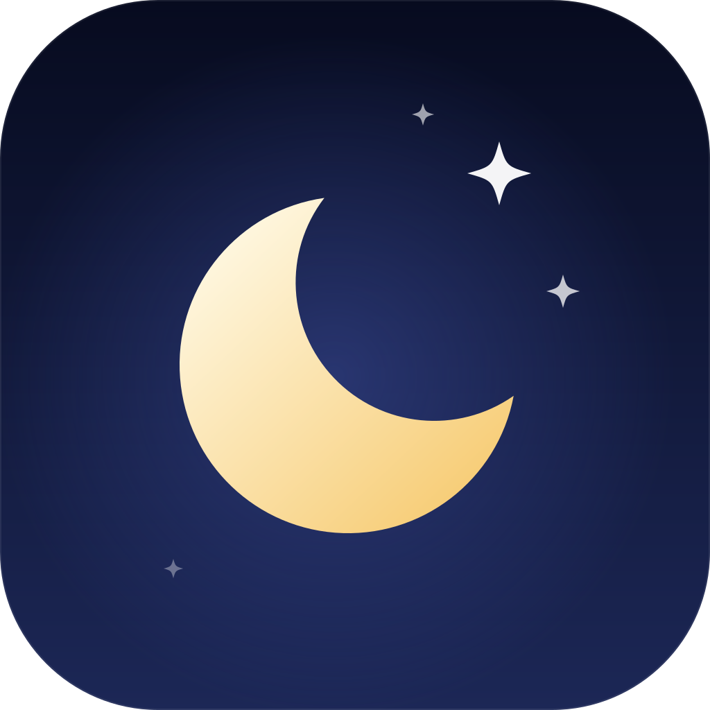

Factory runs
A task becomes stages: plan, implement, check, review, ship. Each stage is an ordinary thread you can open and steer.

NightshiftNightshift for desktop
Hand Nightshift your work in the evening. It plans, builds, checks, reviews and prepares the pull request while you sleep. You review and merge in the morning.
Free to download. macOS, Windows and Linux.
Agents
07
Claude Code, Codex, Cursor, OpenCode, Kiro, Grok and Antigravity.
Parallel runs
03
Several tasks move through the factory at the same time.
Your code
LOCAL
It goes from your machine to your provider and nowhere else.
What Nightshift does
A task becomes stages: plan, implement, check, review, ship. Each stage is an ordinary thread you can open and steer.
oxlint, Knip, gitleaks, OSV-Scanner, Semgrep and more run after each implementation stage. Each tool has its own switch.
The reviewer can run on a different model than the implementer, and its findings go back to the implementer automatically.
A Kanban board of every thread by status. Queue follow-ups while an agent is busy or while you are away, and they run in order.
Gates check that a change actually runs, not just that it compiles.
Move a thread to your own cloud machine with /cloud and bring it back
with /local. Close the laptop, the agents keep working.
The factory
Give the factory a task and it walks it through five stages. Skills and tools are set up for each stage, agents hand work to subagents, and every check has a clear verdict you can read in the morning.
Fix login redirect for expired sessions
you /cloud
app Moving this thread to Nightshift Cloud
app Done. Agents keep working if you close the lid.
you /local
app Back on this computer.Nightshift Cloud
Nightshift Cloud runs in your own AWS account, keeps your projects and sign-ins on its own disk, sleeps when nothing is running and wakes from any device.
/cloud to continue a thread there and /local to bring
it home.
Bring your own agent
Every agent is listed on first launch. Install and sign in from the setup screen, or later from Settings. Nightshift uses your own subscriptions.
Download
Checking the latest release…
Release notes and every file
· Checksums are in SHA256SUMS on the release.
Early builds are not signed yet. On macOS, if the app is reported as damaged, run
xattr -cr /Applications/Nightshift.app once, then open it. On Windows,
choose More info, then Run anyway in the SmartScreen prompt.
Once installed, the app updates itself from the same release feed.
Get started
Questions
Nightshift drives the coding agents you already have, with your own sign-in. Their usage is billed by their providers. Nightshift is free to download and use.
From your machine to the provider of the agent you chose. Nightshift keeps its state on your disk. With Nightshift Cloud, work runs on a machine in your own AWS account.
Nightshift is built on T3 Code and released under the MIT license. The factory, Nightshift Cloud and the night-sky look are Nightshift's own.
Yes. The installed app checks the release feed and offers new versions.